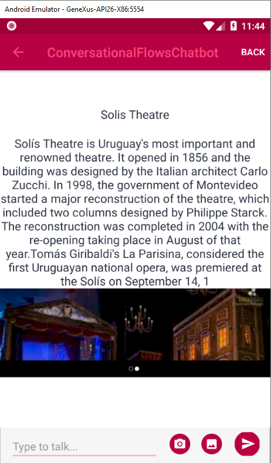

match With Entity property
If true, the provider maps this parameter with an entity value. Scope Objects: Conversational Flows Instance Description
Through this property, the User Input can be matched with an entity. The entity has to be specified in the entity property. This guarantees that the user input will be validated against an entity value by the provider. If you want to match with more than one entity value, the variable associated with the User input must have the Collection property set to TRUE. See Variable collection property behavior for User inputs for more information. Important When a User Input has Match With Entity property = TRUE, the entity value can also be obtained from the user's initial query (which triggers the flow), if the Trigger Messages property includes a training phrase which references the Entity. See the example below. Samples
I. In the following example, UserIdentification is a User Input which has the Match With entity property configured. The Entity property determines the name of the entity that will be matched. In this case, it's called "UserIdentification." If the user fails to enter a valid value, the message specified in the On Error Messages property is displayed. II. Obtaining the Entity value from the user's initial query In this example, one Trigger Message of the "Get Activities Information" Flow is as follows: "information about @Activities" Where @Activities is a reference to the Activities Entity defined in the NLP Provider. At the same time, the Flow is as follows:
Note that the User Input (which prompts the user for the type of activity he's interested in), matches the Entity Activities. So, if the user's initial query is "I need information about artistic activities," he won't be asked to enter the User Input because he has already included that information in his query (as "artistic" is a valid value for "Activities" entity). At runtime:  See Also
|

| Backlinks | |
| Chatbot Entity | |
| Chatbots Collection property | |
| entity property | match With Entity property |
| Trigger Messages property | User Input Redirections Condition property |
| Validation Procedure property |